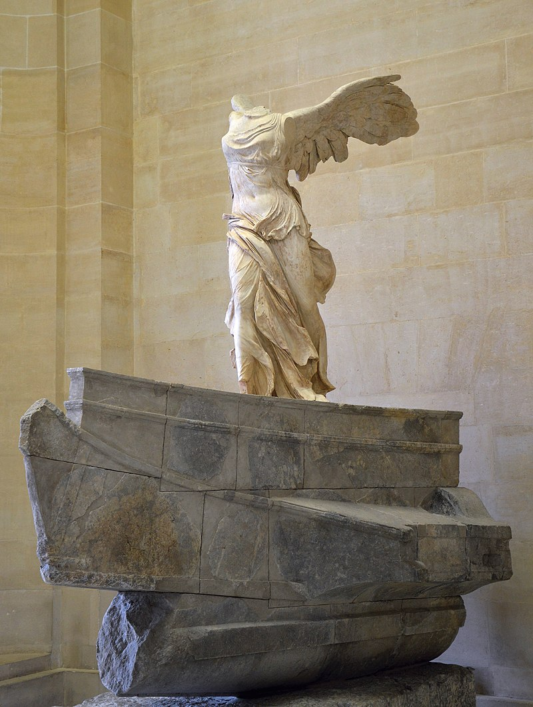

{kind=link}
{kind=link}


Principais Artistas e Obras
Algumas das principais obras:
- Estatua de Venûs: Vênus de Milo é uma estátua da Grécia Antiga, cuja autoria suspeita-se ser de Alexandre de Antioquia. Foi descoberta em 1820, na ilha de Milo. Desde então, foi levada para a França e exposta no Museu do Louvre, onde se encontra até hoje.
- Estatua de Apolo: Sua datação e autoria são disputadas e sua procedência é desconhecida, mas geralmente é considerado uma cópia romana de um original grego que se perdeu. Redescoberto no Renascimento, o Apolo foi exposto no Cortile del Belvedere do Vaticano a partir de 1511, e dali recebeu seu nome. Logo se tornou célebre, e durante muito tempo foi considerado a representação ideal da perfeição física masculina e uma das mais importantes relíquias da Antiguidade clássica.
- Vitória de Samotrácia(Nike): Produzida por algum escultor desconhecido, provavelmente rodiano, acredita-se que a estátua foi confeccionada entre 220 e 190 a.C.. Quando sua descoberta em 1863, acreditou-se que seu patrocinador teria sido o general e Rei Demétrio I da Macedónia, chamado Poliórcetes, após sua vitória em Chipre.